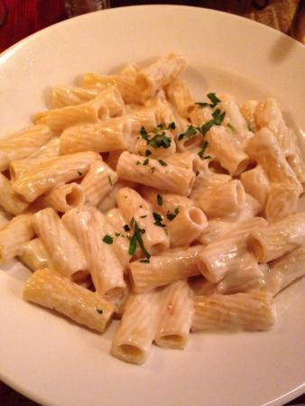

Rigatone 4 formaggi
Ingredientes
- 1/2 taza de crema de leche
- 85g de Queso Balpaese, Gorgonzola y Fontina
- 1/2 taza de queso Parmesano
- 2 cdas. de perejil picadito
Receta
-En una sartén grande y gruesa, a fuego mediano bajo, vierta la crema de leche. Añada el queso gorgonzola en trozos pequeñitos, el queso Bel Paese o Taleggio, cortado en cuadritos pequeños y el queso Fontina cortado
-Revuelva bien la mezcla hasta que los quesos se derrita. Se le añade la pasta que ha sido cocinada al dente, y se une revolviendo suavemente con una cuchara de madera.
-Añadir después el queso parmesano, perejil picadito, sal y pimienta al gusto y servir al instante. Si quiere la salsa más cremosa, se le puede añadir más crema de leche durante la cocción.
